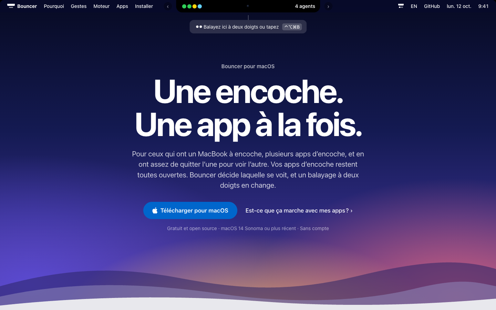
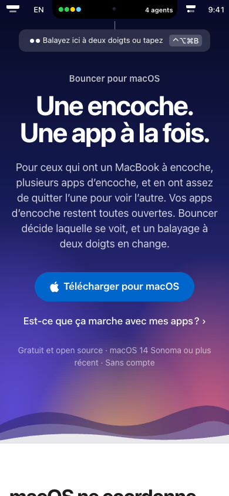

Review du fond de la landing Bouncer
1. La page est exacte et précise, ce qui est rare, mais elle parle au développeur qui l'a construite : la moitié du texte explique le moteur (ms, WindowServer, CGWindowList, bundle ID) et presque rien ne dit ce que l'utilisateur gagne dans sa journée.
2. Le titre énonce une règle (« Une encoche. Une app à la fois. ») au lieu d'une promesse. Il ne dit ni à qui la page s'adresse ni ce qu'on y gagne, et deux phrases clés sont fausses pour boringNotch, l'app la plus citée (« restent toutes ouvertes », « sans les quitter »).
3. L'objection qui décide du téléchargement (donner l'autorisation Accessibilité et passer l'avertissement Gatekeeper pour l'app d'un inconnu) est traitée en bas de page ou pas du tout, et rien sur la page ne montre que quelqu'un d'autre que l'auteur s'en sert.
Bloquant avant toute diffusion, hors copie. Vérifié le 13/10 avec gh : le dépôt donpaco13/Bouncer est privé, sans aucune release, et le tap donpaco13/homebrew-tap n'existe pas. Aujourd'hui, les deux boutons « Télécharger » et la commande brew mènent à une erreur 404. Aucun texte ne rattrape ça.
Deuxième point à régler avant d'écrire une seule ligne sur la vie privée : l'app embarque Sentry (Sources/Bouncer/main.swift:51, sendDefaultPii = false), alors que docs/CONFIDENTIALITE.md affirme « aucun code réseau, aucune dépendance tierce, ni bibliothèque de rapport de crash ». La doc est fausse depuis l'ajout de Sentry. À vérifier aussi : le suivi de sessions de Sentry n'est pas désactivé dans le code, et il est actif par défaut, donc l'app envoie probablement un signal à chaque lancement, pas seulement quand elle plante.
Les 5 changements les plus rentables
- Réécrire le héros autour d'une promesse vraie, avec l'audience nommée. « Toutes vos apps d'encoche. Une seule à l'écran. », puis une phrase qui nomme les apps et ce qu'elles affichent (agents, musique, fichiers), et une ligne « à partir de deux apps d'encoche ». Retirer « restent toutes ouvertes » et « sans les quitter », faux pour les apps qui passent par une relance. Héros, meta
- Répondre à l'objection de confiance à côté du bouton. Une ligne sur l'autorisation Accessibilité (à quoi elle sert, et que sans elle Bouncer ne touche à rien), un lien vers le code, une phrase honnête sur Sentry, et « pour désinstaller, glissez Bouncer à la corbeille ». C'est la permission la plus intrusive de macOS, demandée par une app non notarisée : c'est elle qui fait partir, pas le prix. Héros, installation
- Dire ce que devient l'app cachée. Aujourd'hui, la page ne le dit nulle part. Masquée (Vibe Island, NotchNook…) : elle reste ouverte et revient là où vous l'aviez laissée. Relancée (boringNotch, Notchy, Mew Notch) : elle est fermée tant qu'une autre a l'encoche, donc elle n'affiche plus rien. Le mettre dans le tableau de compatibilité, à la place des notes « Régie par son bundle ID ». Compatibilité, moteur
- Réduire le moteur à une garantie et deux chiffres, et remonter la compatibilité. Garder « Allumer avant d'éteindre » et « jamais tuée de force », les deux meilleures idées de la page. Remplacer 46 ms / 5,1 ms / ≈ 1 s par « environ 50 ms » et « environ 1 s » (le 46 et le 5,1 ne mesurent pas la même chose). Envoyer CGWindowList, WindowServer, Space privé, bundle ID et le seuil de 80 % dans la doc. Moteur, ordre
- Montrer une vraie bascule en vidéo, et comparer à la sortie manuelle. Huit secondes filmées sur un vrai MacBook (le README a déjà le TODO), sous le héros. Puis trois lignes « à la main / avec Bouncer » : quitter, rouvrir, attendre, contre un balayage. La démo du héros est une simulation ; la vidéo est la seule preuve qui existe avant d'avoir des utilisateurs. Preuve
Petits gains à prendre en passant : le bouton « Télécharger » du héros fait défiler jusqu'à #install au lieu de télécharger (libellé à changer, voir le héros) ; sur téléphone, le même bouton ne sert à rien (proposer « Ouvrez cette page sur votre Mac » et un bouton pour copier le lien) ; la meta EN répète « notch app » deux fois.





Sommaire
- Héros (et meta)
- Problème
- Gestes
- Moteur
- Compatibilité
- Installation
- Pied de page
- Ordre des sections
- Positionnement
- Apport de chaque skill
Héros
Ce qui marche
- Le lien secondaire « Est-ce que ça marche avec mes apps ? » est exactement la deuxième question du visiteur, posée avec ses mots. À garder tel quel.
- La ligne de mentions est courte et utile (gratuit, open source, macOS 14, sans compte).
- Le rythme du titre se retient. La réécriture garde ce rythme en deux temps.
Ce qui ne marche pas
- Le titre ne promet rien. « Une encoche. Une app à la fois. » décrit la règle que Bouncer applique. Le visiteur qui n'a jamais vu deux apps se superposer ne reconnaît pas son problème, et celui qui l'a vécu ne lit pas ce qu'il gagne. Ogilvy : le titre porte la promesse et désigne son lecteur, sinon 80 % des visiteurs repartent sans avoir rien appris.
- Deux affirmations fausses pour une partie des apps. « Vos apps d'encoche restent toutes ouvertes » : boringNotch, Notchy et Mew Notch sont fermées puis relancées à chaque bascule (README,
docs/COMPATIBILITE.md§3). La meta dit « sans les quitter ». Un utilisateur de boringNotch qui voit son app redémarrer lira ça comme un mensonge, et l'écrira sur Reddit. - « App d'encoche » n'est jamais défini. Le visiteur qui n'en a qu'une ne lit nulle part que Bouncer ne lui sert à rien. Celui qui n'en a aucune n'a pas de porte de sortie.
- Le bouton ment un peu. « Télécharger pour macOS » mène à l'ancre
#install, où il faut recliquer. Sur téléphone, un bouton de téléchargement d'app Mac ne mène nulle part. - Le surtitre « Bouncer pour macOS » gaspille la ligne la plus lue après le titre. Il peut porter l'audience.
| Actuel | Proposé | |
|---|---|---|
| Surtitre FR | Bouncer pour macOS | Pour MacBook à encoche, dès deux apps d'encoche |
| Titre FR | Une encoche. Une app à la fois. | Toutes vos apps d'encoche. Une seule à l'écran.Promesse et audience dans le même titre, rythme gardé. Variantes à tester : « Gardez Vibe Island et boringNotch. Bouncer les fait tenir dans la même encoche. » (plus concret, mais vieillit avec les noms) ; « Plusieurs apps d'encoche, une seule encoche, chacune son tour. » |
| Sous-titre FR | Pour ceux qui ont un MacBook à encoche, plusieurs apps d'encoche, et en ont assez de quitter l'une pour voir l'autre. Vos apps d'encoche restent toutes ouvertes. Bouncer décide laquelle se voit, et un balayage à deux doigts en change. | Vibe Island suit vos agents, boringNotch votre musique, NotchNook vos fichiers, et toutes dessinent au même endroit sous l'encoche. Bouncer en affiche une et met les autres de côté. Un balayage à deux doigts sur l'encoche passe à la suivante.Définit « app d'encoche » par l'exemple, montre le conflit, dit le geste. « Met de côté » couvre le masquage et la relance sans mentir. |
| Bouton FR | Télécharger pour macOS | Installer Bouncer, c'est gratuitLe bouton fait défiler vers l'installation : le libellé le dit. Le jour où la release a un fichier au nom fixe (releases/latest/download/Bouncer.zip), passer à un vrai lien de téléchargement et garder « Télécharger ». |
| Mentions FR | Gratuit et open source · macOS 14 Sonoma ou plus récent · Sans compte | Gratuit · code source sur GitHub · macOS 14 ou plus récent · sans compte« Code source sur GitHub » devient un lien : c'est la réponse la plus forte à la peur de l'autorisation Accessibilité, et aujourd'hui le premier lien vers le dépôt est dans le pied de page. |
| Mobile FR | Télécharger pour macOS | Bouncer s'installe sur Mac. Ouvrez cette page sur votre MacBook. [Copier le lien] |
| Surtitre EN | Bouncer for macOS | For notched MacBooks running two notch apps or more |
| Titre EN | One notch. One app at a time. | All your notch apps. One on screen. |
| Sous-titre EN | For MacBook owners who run more than one notch app and are tired of quitting one to see the other. Your notch apps all stay open. Bouncer decides which one you see, and a two-finger swipe changes it. | Vibe Island tracks your agents, boringNotch your music, NotchNook your files, and they all draw in the same spot under the notch. Bouncer shows one and puts the others aside. A two-finger swipe on the notch moves to the next. |
| Bouton EN | Download for macOS | Install Bouncer, it's free |
| Mobile EN | Download for macOS | Bouncer runs on your Mac. Open this page on your MacBook. [Copy link] |
Meta et SEO de la page
- Le titre EN « Bouncer, a notch app manager to switch notch apps on MacBook » répète « notch app » et sonne écrit pour un robot. Le FR « gestionnaire d'apps d'encoche (notch) » est correct mais long.
- Les deux descriptions disent « sans les quitter », faux pour les apps relancées.
- Le H1 ne contient aucun mot qu'un visiteur taperait. Le titre proposé contient « apps d'encoche ».
- Dans le HTML rendu, le titre du menu de démonstration (« Apps d'encoche », un
h3) arrive avant leh1. À sortir des titres.
| Actuel | Proposé | |
|---|---|---|
| title FR | Bouncer, le gestionnaire d'apps d'encoche (notch) pour MacBook | Bouncer : plusieurs apps d'encoche sur un seul MacBook |
| description FR | Passez d'une app d'encoche à l'autre sans les quitter. Bouncer garde Vibe Island, boringNotch et NotchNook ouvertes, n'en montre qu'une, et change d'app d'un balayage à deux doigts. Gratuit, macOS 14+. | Vibe Island, boringNotch et NotchNook dans la même encoche, sans qu'elles se superposent. Bouncer en affiche une, un balayage à deux doigts passe à la suivante. Gratuit, open source, macOS 14+. |
| title EN | Bouncer, a notch app manager to switch notch apps on MacBook | Bouncer: run several notch apps on one MacBook notch |
| description EN | Switch notch apps on your MacBook without quitting them. Bouncer keeps Vibe Island, boringNotch and NotchNook open, shows one at a time, and changes app with a two-finger swipe. Free, macOS 14+. | Vibe Island, boringNotch and NotchNook in the same notch, without drawing over each other. Bouncer shows one, and a two-finger swipe moves to the next. Free, open source, macOS 14+. |
Problème
Ce qui marche
- Le chapo est concret : « elles tombent sur le même rectangle, l'une sur l'autre ». On voit la scène.
- La phrase en gras est la meilleure de la page : « La seule sortie que macOS vous laisse, c'est de quitter une app pour utiliser l'autre ». C'est le coût que le visiteur paie aujourd'hui, dit dans sa langue.
- Le dessin « sans / avec » est la bonne idée au bon endroit.
Ce qui ne marche pas
- Le titre est négatif et parle de macOS. « macOS ne coordonne pas les apps d'encoche » met le système en sujet et une négation au centre. Le lecteur se reconnaît mieux dans la scène que dans le constat.
- « Bouncer le fait pour vous, en quelques millisecondes » est inexact deux fois. Pour la plupart des apps, Bouncer masque, il ne quitte pas. Pour celles qu'il relance, c'est une seconde environ. Et le masquage mesuré prend 46 à 65 ms, ce qui dépasse « quelques millisecondes ».
- La légende « les autres ouvertes et en attente » est fausse pour boringNotch, qui est justement l'app dessinée dans la démo.
- « Aucune API de coordination » : le mot API parle au développeur, pas à l'utilisateur.
- Le coût de la sortie manuelle n'est pas chiffré. C'est l'endroit pour la comparaison demandée « à la main / avec Bouncer ».
| Actuel | Proposé | |
|---|---|---|
| Titre FR | macOS ne coordonne pas les apps d'encoche | Deux apps d'encoche, un seul rectangle |
| Chapo FR | Vibe Island, boringNotch, NotchNook, Notchy : chacune dessine sa propre pastille sous votre encoche. Ouvrez-en deux, elles tombent sur le même rectangle, l'une sur l'autre. | Inchangé. Il marche. |
| Corps FR | Il n'existe aucune API de coordination et aucune notion d'« app d'encoche active ». La seule sortie que macOS vous laisse, c'est de quitter une app pour utiliser l'autre, puis de la relancer quand vous en avez de nouveau besoin. Bouncer le fait pour vous, en quelques millisecondes quand l'app le permet. | macOS ne sait pas laquelle doit passer devant. La seule sortie qu'il vous laisse, c'est de quitter une app pour voir l'autre, puis de la rouvrir quand vous en avez de nouveau besoin. Bouncer fait cette rotation à votre place, d'un geste, et ne retire l'app en place qu'une fois la suivante affichée. |
| Nouveau bloc FR | (absent) | À la main : quitter l'app, la rouvrir depuis Spotlight, attendre qu'elle se recharge, et recommencer dans l'autre sens. Avec Bouncer : un balayage. L'app masquée revient en moins d'un dixième de seconde, là où vous l'aviez laissée. Celles qui doivent redémarrer reviennent en une seconde environ. |
| Légende FR | Avec Bouncer, une app à l'écran, les autres ouvertes et en attente | Avec Bouncer, une app à l'écran, les autres attendent leur tour |
| Titre EN | macOS doesn't coordinate notch apps | Two notch apps, one rectangle |
| Corps EN | There is no coordination API, and no such thing as an "active notch app". The only way out macOS gives you is to quit one app to use the other, then launch it again when you need it back. Bouncer does that for you, in a few milliseconds when the app allows it. | macOS has no idea which one should be in front. The only way out it gives you is to quit one app to see the other, then reopen it when you need it back. Bouncer does that rotation for you with one gesture, and only removes the current app once the next one is on screen. |
| Nouveau bloc EN | (absent) | By hand: quit the app, reopen it from Spotlight, wait for it to load, and do it again the other way. With Bouncer: one swipe. A hidden app comes back in under a tenth of a second, where you left it. The ones that need a restart come back in about a second. |
| Légende EN | With Bouncer: one app on screen, the others open and waiting | With Bouncer: one app on screen, the others wait their turn |
Gestes
Ce qui marche
- Chaque commande est décrite par ce que fait la main (« curseur sur l'app, deux doigts à l'horizontale »). Aucune ambiguïté.
- « Loin de l'encoche, Bouncer ne dessine rien » répond d'avance à la peur d'un utilitaire envahissant.
- « Prenez celle qui tombe sous la main » a une voix.
Ce qui ne marche pas
- Le titre compte des fonctions au lieu de dire le résultat. Quatre façons de faire quoi, et pourquoi m'en soucier ?
- Le raccourci n'est pas écrit dans le texte de sa carte, et sa phrase est construite sur deux négations (« la seule commande qui n'oblige ni à viser l'encoche ni à ouvrir un menu »).
- La carte du menu enseigne trois symboles (● ○ ◐) que personne n'a besoin d'apprendre avant d'installer, et tait l'information utile du README : le menu dit, app par app, si la bascule sera instantanée ou passera par une relance.
- EN : « change app » n'est pas idiomatique (on dit « switch apps »), et la phrase du raccourci est difficile à lire même pour un natif.
| Actuel | Proposé | |
|---|---|---|
| Titre FR | Quatre façons de changer d'app | Un geste, et l'app suivante prend l'encoche |
| Chapo FR | Prenez celle qui tombe sous la main. Toutes avancent d'un cran dans le cycle, et le cycle boucle. | Quatre commandes, prenez celle qui tombe sous la main. Chacune passe à l'app suivante, et après la dernière on revient à la première. |
| Raccourci FR | Marche depuis n'importe quelle app, plein écran compris. Sans trackpad, c'est la seule commande qui n'oblige ni à viser l'encoche ni à ouvrir un menu. | ⌃⌥⌘B, depuis n'importe quelle app, plein écran compris. La commande à garder si vous travaillez au clavier ou sans trackpad. |
| Menu FR | Pas d'icône dans le Dock, pas de fenêtre. ● désigne l'app qui tient l'encoche, ○ une app en attente, ◐ une bascule en cours. Cliquez sur une app en attente pour la ramener. | Pas d'icône dans le Dock, pas de fenêtre. Le menu liste vos apps d'encoche, marque celle qui est à l'écran, et son infobulle dit pour chacune si elle reviendra tout de suite ou après une relance. Cliquez sur une app pour la ramener. |
| Titre EN | Four ways to change app | One gesture, and the next app takes the notch |
| Chapo EN | Take whichever is closest to hand. They all move one step through the cycle, and the cycle loops. | Four commands, use whichever is closest to hand. Each one moves to the next app, and after the last one you're back at the first. |
| Raccourci EN | Works from any app, full screen included. Without a trackpad, it is the one command that makes you neither aim at the notch nor open a menu. | ⌃⌥⌘B, from any app, full screen included. The one to remember if you work from the keyboard or without a trackpad. |
| Menu EN | No Dock icon, no window. ● is the app holding the notch, ○ one waiting, ◐ a switch in progress. Click a waiting app to bring it back. | No Dock icon, no window. The menu lists your notch apps, marks the one on screen, and its tooltip tells you for each whether it will come back instantly or after a relaunch. Click an app to bring it back. |
Moteur
Ce qui marche
- « Allumer avant d'éteindre » est la meilleure idée de la page. C'est une garantie, elle a un nom, et elle répond à la vraie peur (et si ça rate ?). Hormozi appellerait ça une garantie nommée. Elle mérite d'être dite plus haut et plus simplement.
- « Une app qui refuse de quitter n'est jamais tuée de force. Elle a peut-être quelque chose à enregistrer. » Concret, humain, rassurant. À garder mot pour mot.
- Donner des chiffres mesurés est juste. Ogilvy : le fait précis bat l'adjectif.
Ce qui ne marche pas
- C'est la section la plus longue, et elle est écrite pour un développeur. Binaire, WindowServer, CGWindowList, Space privé, bundle ID, seuil de 80 % : aucun visiteur ne décide d'installer sur la détection géométrique. Ça rassure Hacker News, ça ralentit tout le monde. Même l'entrée de navigation s'appelle « Moteur ».
- Les trois chiffres ne se comparent pas. 46 ms est le temps de bout en bout pour Vibe Island seule ; 5,1 ms est un temps de propagation du retour ; le README annonce 31 ms pour la même opération. Posés côte à côte, ils suggèrent une symétrie fausse, et le visiteur ne sait de toute façon pas lire « 46 ms ».
- « L'encoche n'est jamais vide » est trop absolu. La garantie réelle porte sur la bascule : Bouncer ne retire l'app en place qu'une fois la suivante comptée à l'écran. Elle ne couvre pas une app qui plante ensuite.
- Le chiffre « ≈ 1 s » ne dit pas la conséquence : pendant qu'elle est cachée, l'app relancée est fermée et n'affiche plus rien (musique, notifications).
| Actuel | Proposé | |
|---|---|---|
| Nav FR / EN | Moteur / How it works | Fiabilité / Reliability |
| Titre FR | Ce qui se passe quand vous basculez | Ce qui se passe quand vous changez d'app |
| Chapo FR | Deux voies, choisies selon ce que le binaire de chaque app accepte. Vous n'avez rien à régler. | Selon l'app, Bouncer la cache ou la redémarre. Il choisit tout seul, vous n'avez rien à régler. |
| Chiffre 1 FR | 46 ms pour sortir une app de l'encoche. Voie rapide, mesurée de bout en bout. Environ 31 ms de propagation dans le WindowServer. | ≈ 50 ms pour cacher une app. Vibe Island, Cyclop, gh-notch, NotchNook : de 46 à 57 ms mesurés, plus vite qu'un clignement d'œil. L'app reste ouverte et revient là où vous l'aviez laissée. |
| Chiffre 2 FR | 5,1 ms pour la ramener. Rien à relancer, rien à recharger. | Retiré. Son seul message (l'app revient sans recharger) passe dans le chiffre 1. |
| Chiffre 3 FR | ≈ 1 s quand il faut relancer. Certaines apps épinglent leurs fenêtres dans un Space privé et ignorent l'ordre de masquage. Bouncer les redémarre à la place. | ≈ 1 s pour les apps qui refusent d'être cachées. boringNotch, Notchy et Mew Notch ignorent le masquage : Bouncer les ferme quand une autre prend l'encoche et les rouvre quand vous revenez. Entre les deux, elles n'affichent rien. |
| Garantie FR | Sur les deux voies, Bouncer ne masque ou ne ferme l'app en place qu'après avoir compté la nouvelle fenêtre à l'écran. Si la nouvelle app ne démarre pas, ou met plus de cinq secondes, l'app en place ne bouge pas. L'encoche n'est jamais vide. | Bouncer ne retire l'app en place qu'une fois la suivante affichée. Si la suivante ne démarre pas, ou met plus de cinq secondes, rien ne bouge. Vous ne restez jamais devant une encoche vide au milieu d'une bascule. |
| Refus FR | Pas d'API privée ni d'injection dans le WindowServer, les astuces qui cassent à chaque mise à jour mineure de macOS. Une app qui refuse de quitter n'est jamais tuée de force. Elle a peut-être quelque chose à enregistrer, alors Bouncer le note et la laisse tranquille. | Pas d'astuce système non documentée, celles qui cassent à chaque mise à jour de macOS. Une app qui refuse de quitter n'est jamais tuée de force. Elle a peut-être quelque chose à enregistrer, alors Bouncer la laisse tranquille.Le lecteur ne sait pas ce qu'est le WindowServer ; il comprend « une mise à jour de macOS ». Version plus forte possible, « n'utilise que des fonctions documentées par Apple », seulement si l'auteur le confirme : le README dit « No unstable private APIs », pas « aucune API privée ». |
| Détection FR | Une app d'encoche est une fenêtre flottante collée au bord haut, assez large pour couvrir le boîtier caméra et plus étroite que 80 % de l'écran. […] reconnues par leur bundle ID. | Une ligne seulement, en question-réponse : « Bouncer peut-il cacher ma fenêtre de navigateur ? Non. Il ne touche qu'aux petites fenêtres collées à l'encoche. » Le reste part dans docs/COMPATIBILITE.md, avec un lien « Pour les curieux, la méthode complète ». |
| Frise | Chronologie détaillée avec « Fenêtre comptée par CGWindowList » | Garder la frise, renommer le repère « boringNotch est à l'écran ». Le nom de la fonction système n'apprend rien au lecteur. |
| Titre EN | What happens when you switch | Inchangé, il marche en anglais. |
| Chapo EN | Two routes, picked from what each app's binary accepts. There is nothing for you to set. | Depending on the app, Bouncer hides it or restarts it. It picks on its own, there's nothing to set. |
| Chiffre 1 EN | 46 ms to take an app out of the notch. Fast route, measured end to end. About 31 ms of it is propagation inside the WindowServer. | ≈ 50 ms to hide an app. Vibe Island, Cyclop, gh-notch, NotchNook: 46 to 57 ms measured, faster than a blink. The app stays open and comes back where you left it. |
| Chiffre 3 EN | ≈ 1 s when a relaunch is needed. Some apps pin their windows in a private Space and ignore the hide command. Bouncer restarts them instead. | ≈ 1 s for apps that won't be hidden. boringNotch, Notchy and Mew Notch ignore the hide command, so Bouncer quits them when another app takes the notch and reopens them when you come back. In between, they show nothing. |
| Garantie EN | On both routes, Bouncer hides or closes the current app only after it has counted the new window on screen. […] The notch is never empty. | Bouncer only removes the current app once the next one is on screen. If the next one won't start, or takes more than five seconds, nothing moves. You never end up staring at an empty notch halfway through a switch. |
| Refus EN | No private APIs and no WindowServer injection, the tricks that break on every minor macOS update. […] | No undocumented system tricks, the kind that break on a minor macOS update. An app that refuses to quit is never force-killed. It may have something to save, so Bouncer leaves it alone. |
Compatibilité
Ce qui marche
- C'est l'atout de crédibilité de la page. Séparer « Mesuré » de « Prédit », dater la campagne, nommer la machine : peu de landings osent. C'est le « Sears fait 5 % de marge » d'Ogilvy, un fait vérifiable qui vaut mieux qu'une promesse.
- Le titre reprend la question du visiteur, et le lien du héros y mène.
- Les données viennent d'un seul fichier (
compatibilite.json) dérivé de la doc. La règle « la démo ne montre qu'une app mesurée » est le bon garde-fou.
Ce qui ne marche pas
- Les notes parlent au développeur. « Régie par son bundle ID », « Space privé, relance seulement », « Lu dans la source » ne répondent pas à la question « qu'est-ce que ça change pour moi ? ».
- La colonne « Bascule » ne dit pas la conséquence. « Par relance » veut dire que l'app est fermée quand elle est cachée. Le visiteur doit le deviner.
- « Sept apps mesurées » est généreux. Pour Notchy et Mew Notch, ce qui a été mesuré, c'est l'échec du masquage (2 → 2 → 2 fenêtres) ; la relance en est déduite. Le badge « Mesuré » se défend, le chiffre en chapo un peu moins.
- Une seule machine de test (la doc le dit, §6), et la page ne le dit pas.
- Les apps absentes ne sont pas traitées. Alcove, Droppy et MediaMate ont été essayées sans résultat concluant. Le propriétaire d'Alcove ne trouve pas son app et conclut « ça marche peut-être ». Il manque « pas dans la liste = pas encore testée » et un appel à ouvrir une issue.
| Actuel | Proposé | |
|---|---|---|
| Chapo FR | Sept apps mesurées une par une sur une vraie machine. Trois autres lues dans leur code source. | Dix apps passées en revue. Sept installées et testées une par une sur un MacBook Pro M4, trois lues dans leur code source en attendant leur tour. Une seule machine de test pour l'instant. |
| Colonne FR | Bascule : Instantanée / Par relance | Quand elle est cachée : Reste ouverte / Fermée, redémarre en ≈ 1 s |
| Notes FR | 46 ms de bout en bout · Régie par son bundle ID · Environ une seconde · Lu dans la source · Space privé, relance seulement | Vibe Island « Cachée en 46 ms » · NotchNook « Cachée en 57 ms » · boringNotch « Redémarre en une seconde environ » · Notchy, Mew Notch « Refuse d'être cachée, donc redémarre » · SuperIsland, Atoll « Pas encore testée. D'après son code, devrait se cacher. » · DynamicNotch « Pas encore testée. D'après son code, devra redémarrer. » |
| Sous le tableau FR | (absent) | Votre app n'est pas dans la liste ? Elle n'a pas encore été testée. Alcove, Droppy et MediaMate ont été essayées sans résultat net. Ouvrez une issue avec son nom pour qu'on la teste. |
| Chapo EN | Seven apps measured one by one on a real machine. Three more read from their source code. | Ten apps reviewed. Seven installed and tested one by one on an M4 MacBook Pro, three read from their source code until they get their turn. One test machine so far. |
| Colonne EN | Switch: Instant / Relaunch | While hidden: Stays open / Quit, restarts in ≈ 1 s |
| Notes EN | Governed by bundle ID · Read from the source · Private Space, relaunch only | "Hidden in 46 ms" · "Restarts in about a second" · "Won't be hidden, so it restarts" · "Not tested yet. Its code says it should hide." · "Not tested yet. Its code says it will need a restart." |
| Sous le tableau EN | (absent) | Your app isn't listed? It hasn't been tested yet. Alcove, Droppy and MediaMate were tried without a clear result. Open an issue with its name and we'll test it. |
Installation
Ce qui marche
- Le bloc Gatekeeper est la meilleure gestion d'objection de la page. Il cite le message exact que le visiteur verra, donne le prix (99 € par an), dit que l'app n'est « ni endommagée ni infectée », et avoue que le cask Homebrew contourne Gatekeeper. Cette franchise vend.
- Le .zip et Homebrew à poids égal, les prérequis en trois lignes, « une minute d'installation » : le coût d'effort est annoncé.
Ce qui ne marche pas
- L'autorisation Accessibilité est listée sans raison. C'est la plus intrusive de macOS et le premier frein. Le README a la réponse en une phrase ; la page ne l'a pas.
- Il manque le prérequis qui compte : au moins deux apps d'encoche. Le visiteur à une app lit trois prérequis qu'il remplit et installe pour rien.
- Rien sur le premier lancement. Le guide de bienvenue en cinq écrans vérifie l'autorisation et fait essayer le geste. C'est le premier succès de l'utilisateur, et il arrive en une minute : à dire.
- Rien sur la sortie : comment désinstaller. Un utilitaire qui demande l'Accessibilité doit montrer qu'on s'en débarrasse facilement.
- Rien sur ce qui sort du Mac. Sentry envoie des rapports d'erreur. Ne pas le dire, c'est laisser le premier lecteur de Hacker News le découvrir avec Little Snitch.
- « Une minute » est vrai avec Homebrew, juste avec le .zip : décompresser, glisser, essuyer le refus, ouvrir les Réglages, « Ouvrir quand même », mot de passe. Dire « une minute avec Homebrew, deux avec le .zip ».
| Actuel | Proposé | |
|---|---|---|
| Chapo FR | Gratuit, open source, et une minute d'installation. | Gratuit et open source. Une minute avec Homebrew, deux avec le .zip. |
| Prérequis FR | macOS 14 Sonoma ou plus récent · Un MacBook à encoche · L'autorisation Accessibilité | macOS 14 Sonoma ou plus récent · Un MacBook à encoche · Au moins deux apps d'encoche (avec une seule, Bouncer n'a rien à faire) · L'autorisation Accessibilité |
| Accessibilité FR | (rien) | Pourquoi l'Accessibilité ? Pour lire la liste des fenêtres et cacher celles de vos apps d'encoche. Sans elle, Bouncer ne touche à rien. Le code est public, et la note de confidentialité dit, fichier et ligne à l'appui, ce qu'il lit et ce qu'il garde. |
| Confidentialité FR | (rien) | Bouncer envoie des rapports d'erreur anonymes à Sentry, sans adresse IP, pour corriger les plantages. Il n'y a ni compte, ni publicité, ni statistiques d'usage.Condition : corriger d'abord docs/CONFIDENTIALITE.md, et trancher le suivi de sessions (le couper, ou l'écrire ici). Ne pas publier cette ligne avant. |
| Premier lancement FR | (rien) | Au premier lancement, un guide en cinq écrans vérifie l'autorisation et vous fait essayer le geste. Pour désinstaller, glissez Bouncer à la corbeille, ou brew uninstall --zap bouncer. |
| Gatekeeper FR | gatekeeper1 à 3 | Inchangé. Une seule retouche : déplier ce bloc par défaut pour le .zip. Le visiteur qui ne l'a pas lu panique au premier lancement. |
| Chapo EN | Free, open source, and about a minute to install. | Free and open source. One minute with Homebrew, two with the .zip. |
| Prérequis EN | macOS 14 Sonoma or later · A MacBook with a notch · The Accessibility permission | macOS 14 Sonoma or later · A MacBook with a notch · At least two notch apps (with one, Bouncer has nothing to do) · The Accessibility permission |
| Accessibilité EN | (nothing) | Why Accessibility? To read the window list and hide your notch apps' windows. Without it, Bouncer touches nothing. The code is public, and the privacy note lists, file and line, what it reads and what it keeps. |
| Confidentialité EN | (nothing) | Bouncer sends anonymous error reports to Sentry, without your IP address, so crashes get fixed. No account, no ads, no usage analytics. |
| Premier lancement EN | (nothing) | On first launch, a five-screen guide checks the permission and has you try the gesture. To uninstall, drag Bouncer to the Bin, or run brew uninstall --zap bouncer. |
Pied de page
Ce qui marche
- Liens utiles (GitHub, versions, compatibilité, langue), rien de superflu.
Ce qui ne marche pas
- Personne n'a fait cette app. Une app gratuite d'un inconnu qui demande l'Accessibilité gagne beaucoup à montrer qu'il y a une personne derrière, joignable.
- Pas de lien vers la confidentialité, alors que c'est la page que le visiteur méfiant cherche.
- Pas de mention de non-affiliation. La page cite dix apps tierces par leur nom ; une ligne évite le malentendu et protège l'auteur.
- Pas de dernier appel. Ogilvy : après le titre, le post-scriptum est l'endroit le plus lu. Le pied de page peut porter le bouton une dernière fois.
| Actuel | Proposé | |
|---|---|---|
| Ligne FR | Bouncer, un utilitaire pour macOS 14 et plus récent. Licence MIT. | Bouncer est fait par François Hatem, sous licence MIT. Un bug, une app à tester : ouvrez une issue sur GitHub. Bouncer n'est affilié ni à Apple ni aux apps citées. |
| Liens FR | GitHub · Versions · Compatibilité · English | GitHub · Versions · Compatibilité · Confidentialité · English |
| Ligne EN | Bouncer, a utility for macOS 14 and later. MIT licence. | Bouncer is made by François Hatem, under the MIT licence. Found a bug, want an app tested? Open an issue on GitHub. Bouncer is not affiliated with Apple or with the apps named here. |
Le nom de l'auteur est une proposition : à valider par François avant publication (le dépôt a encore des commits signés d'une adresse pro à nettoyer, selon la mémoire de l'équipe).
Ordre des sections
Actuel : héros, problème, gestes, moteur, compatibilité, installation.
Proposé : héros (avec définition et « dès deux apps ») → vidéo de 8 s → problème, avec le bloc « à la main / avec Bouncer » → gestes → compatibilité, remontée parce que c'est la deuxième question de tout le monde et que le héros y renvoie → fiabilité, courte (garantie, deux chiffres, ce que devient l'app cachée) → installation, avec l'Accessibilité, la confidentialité et le premier lancement → questions fréquentes (navigateur caché ?, app cachée ?, désinstaller ?, consommation ?) → pied de page.
Pour la question « consommation », un fait à la Rolls-Royce existe dans docs/PERFORMANCE.md : sur une journée normale, la surveillance des fenêtres de Bouncer coûte environ 16 secondes de processeur en tout (6,6 s sur une machine qu'on ne touche pas). Le chiffre ne couvre que ce balayage de fond, à formuler comme tel. C'est exactement le genre de détail qu'Ogilvy mettait en titre.